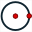

Por defecto MathGraph32 les da un información visual en las herramientas de creación de objetos gráficos.
Por ejemplo si utiliza el icono

de creación de una circunferencia por su centro y un punto, una vez que haya cliqueado en el centro, una circunferencia aparece teniendo por centro el primer punto cliqueado y que pasa por un punto que corresponde al indicador de su mouse.